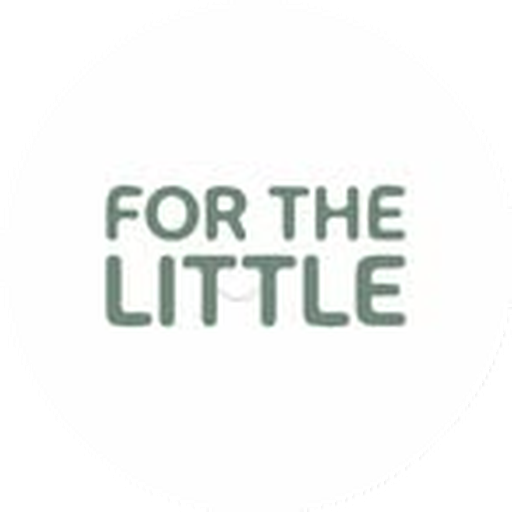

For The Little Indonesia
Panduan & Ringkasan Fitur Sistem Rekap Penjualan (Shopee & TikTok)
🌐 https://laporanftl.vercel.app
Password Akses:
FTL2026
1
Download Laporan Mentah dari
Shopee / TikTok Seller Center
(.xlsx / .csv).
2
Buka Web & Klik
"Pilih File Laporan"
(Otomatis filter 50+ kolom jadi rapi).
3
Klik Tombol Hijau
"Export Excel"
(Langsung jadi laporan resmi siap kirim ke atasan).
📌 11 Fitur Utama Website (Detail & Ringkas)
1. Auto-Detect & Bersihkan Kolom
Otomasi
Menerima file mentah
.xlsx
dan
.csv
dari Shopee & TikTok.
Menyaring
50–60 kolom
mentah jadi
24 kolom inti
transaksi.
Memperbaiki no. pesanan TikTok rusak (
5.86E+17
) jadi angka utuh.
2. Tab Platform Terpisah & Gabungan
Workspace
Tab Shopee:
Khusus membaca data transaksi pesanan Shopee.
Tab TikTok:
Khusus membaca data transaksi TikTok Shop.
Tab Gabungan:
Menyatukan kedua platform untuk total omset brand FTL.
3. Klasifikasi Jalur Order (KOL, Sales, FO)
Segmentasi
Sales Real:
Penjualan asli etalase toko yang menghasilkan uang.
KOL / Affiliate:
Sampel endorse creator & live streaming.
FO (Fake Order):
Pesanan tembak bantuan ulasan/rating toko.
Tersedia tombol filter cepat (Pill Bar) sinkron 2 arah dengan tabel.
4. Perhitungan Keuangan & Laba Bersih
Finansial
6 Kartu otomatis:
Omset Kotor
,
Diskon
,
HPP Modal
,
Omset Bersih
,
Estimasi Laba
, dan
Pesanan Batal
.
Papan rumus matematika transparan (Kotor − Diskon = Bersih; Bersih − HPP = Laba).
Setting HPP satuan per pcs fleksibel (default: Rp 25.000/pcs).
5. Kalkulator Fee Marketplace (Net Cash)
Kas Masuk
Input persentase potongan admin toko (Shopee 6.5%, TikTok 8.0%).
Menghitung estimasi
Uang Bersih yang beneran cair masuk kas rekening FTL
.
Menghitung Laba Bersih Riil (setelah modal HPP + fee admin marketplace).
6. Target Penjualan (Goal Tracker)
Pacing
Bisa pilih target berdasarkan
Nominal Rupiah (Rp)
atau
Pcs Produk
.
Progress bar animasi hijau khas FTL dengan indikator persentase capaian.
Status pacing otomatis:
"🚀 On Track"
,
"⚡ Kejar Target"
, atau
"🏆 Tercapai"
.
7. Grafik Visual Interaktif (Chart.js)
Grafis
Donut Chart:
Visual diagram lingkaran porsi % Sales Real vs KOL vs FO.
Bar & Line Chart:
Grafik tren perkembangan omset bersih & pcs per bulan.
Membantu owner melihat performa toko dalam 1 detik tanpa pusing baca angka.
8. Top 5 Kota Pembeli & Rekap SKU Gudang
Marketing & Stok
Top 5 Kota:
Meranking kota pembeli terbanyak untuk acuan ads TikTok/Meta.
Rekap SKU:
Total pcs terjual per varian untuk pencocokan fisik stok gudang.
9. Filter Tanggal & Smart Search
Pencarian
Filter periode tanggal bebas (Dari tanggal – Sampai tanggal).
Filter bulan 1-klik (misal klik kartu
Oktober 2026
untuk menyaring data sebulan).
Cari instan: No. pesanan, resi, nama pembeli, nama produk, hingga kota.
10. Edit Langsung di Tabel & Pelacak Retur
Operasional
Bisa ubah kategori & status pesanan langsung lewat dropdown tabel.
Pelacak Retur Fisik:
Pantau paket batal apakah masih di sortiran / sudah diambil.
Tersedia tombol centang massal (
Bulk Action
) untuk ubah data sekaligus.
11. Export Laporan Resmi Siap Kirim, Cetak PDF & Auto-Save
Output & Keamanan
Export Excel 1-Klik:
Format rapi ber-kop resmi FTL, auto-lebar kolom, ringkasan bulanan, dan baris TOTAL di bawah (siap kirim ke atasan).
Cetak PDF:
Tampilan cetak bersih tanpa tombol menu (rapi di kertas A4).
Backup & Restore JSON:
Simpan seluruh data untuk dipindah antar-laptop.
Anti-Hilang saat Refresh:
Data tersimpan otomatis di memori browser.